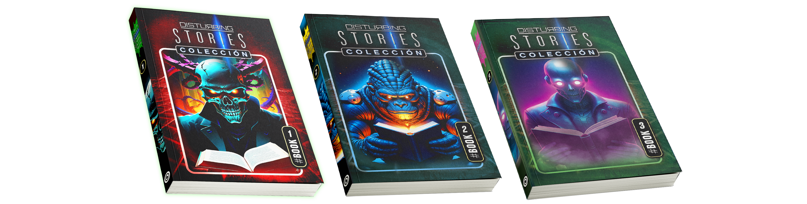

Disturbing Stories es la puerta de entrada a un universo donde el terror y la ciencia ficción se entrelazan para mostrar aquello que habita entre las grietas de lo real.
300 RELATOS, 20 LIBROS
Sus 300 relatos, repartidos en 20 libros, exploran sucesos inexplicables, criaturas ocultas y fenómenos que desafían toda lógica humana.
¡LEED, MALDIT@S!
Puedes leer gratis una parte de este mundo aquí en la web, pero las historias más perturbadoras solo viven en los libros.
LAS STORIES COBRAN VIDA
Algunos relatos cobran vida a través de audios y cortometrajes accesibles con códigos QR, haciendo que la experiencia traspase la pantalla.
AQUÍ COMIENZA TU VIAJE
Si buscas misterio, sorpresa y relatos que te acompañen incluso después de cerrar la página, aquí comienza tu viaje.